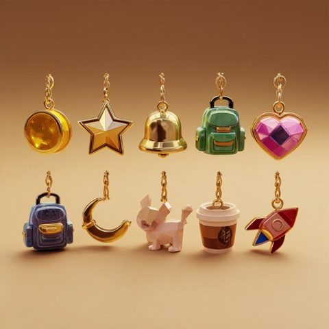

Meta
Picking something up: her inner voice says one line ("Interesting... this key will come in handy.") and the thing drops into the backpack. A new charm jingles and she says "A star charm for my backpack!"
Every player's inventory is a backpack. Tap it and it opens all the way, half shell, like a clamshell split in two, with what she carries sitting in both halves. She picks one of ten styles, dresses five facets, and hangs a charm on it for every quest she finishes.
Midjourney proofs came first; each style is then built as low-poly, flat-shaded parts with real materials (cloth grain, leather, vinyl, wicker, brass), the same camera on both sides.
Decorating is a card game. Press Decorate it, then tap a part of the backpack: its cards are dealt (the body deals colours and patterns, the pocket deals pockets, a strap deals straps, the inside deals linings). Drag a card onto the backpack, or tap it, and that choice goes on. The cards are the same Cards v3 stock as the tile hand; each card's window shows the backpack wearing that choice. Every style has a look of its own until she changes it.
Charms hang from rings on the backpack's side seams and swing when it moves. They come from quests, and most of them from Daddy's core memories, the gold coins. Each is a chunky faceted gold-and-enamel piece on a jump ring and chain, built from the Midjourney charm sheet. Tap one, or Look at the charms, and the camera closes in on it while it turns; swipe for the next.

Wherever Abbie is shown (the first-person levels, the Moon Mission, Grace's basement, the science adventure), she wears this backpack in her own look, with the charms she keeps on it. They swing as she runs and jingle when they knock together. A charm she puts in her jewellery box comes off the backpack. Tap the stage for sound.
Picking something up: her inner voice says one line ("Interesting... this key will come in handy.") and the thing drops into the backpack. A new charm jingles and she says "A star charm for my backpack!"
The backpack sits on the top bubble, about 34 px, in her own colours. Tapping it opens the 3D half shell under it; nothing behind is dimmed or blurred.
When her figure wears the backpack in the world, the charms hang on it too: other characters can see them and react ("Ooh, you found the school roof memory?").
The world just behaves: the café's basement door opens because the key is in her backpack.
Two layers stay apart: what is inside the backpack belongs to the player layer, read by directors through the abbie information manifest (items pocket and charms), never from the screen.
Tour: yes The backpack becomes a tour stop the first time she can pick something up (the café key).
shell front, lining, zip piping, metal hardware, charm star). Code: simulations/backpack.mjs; the store is still simulations/inventory.mjs, so there is one inventory.